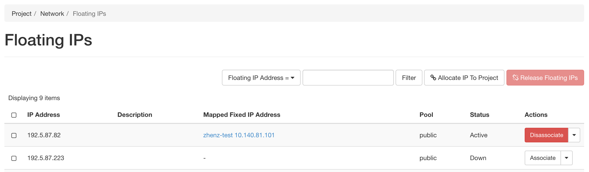

Just click the “Log in” button situated in the top right corner of our main page – you probably won’t even need to create an account!
If your institution is a member of InCommon (most US research and education
institutions are) – or if you have a Google account – you can log in with your
institutional/Google credentials via the federated login. Otherwise, the log in process
will guide you to create an account (read more about logging into Chameleon
via federated login).
On your first Chameleon login you will be asked to accept terms and conditions of use. Please,
note that as part of those terms and conditions you are requested to acknowledge
Chameleon in publications produced using the testbed: see our FAQ for
information on how to reference Chameleon in your publications
and the suggested acknowledgement text.
Once you log in, you will be able to edit your Chameleon profile, sign up for webinars, and participate in our community.
However, to actually use the testbed you will first need to join or create a
project (see below).
To get access to Chameleon resources, you will need to be associated with a
project that is assigned a resource allocation.
If you want to join an existing Chameleon project, you will need to ask the PI
of the project to add your username. You can find your username in your Chameleon profile–it is also displayed in the
top-right corner when you are logged in.
If you want to create a project, you will first either need to obtain a PI
status or work with somebody who has PI status. To determine if you can obtain
PI status, please see a list of PI eligibility criteria.
If you do not meet these criteria (e.g., students generally do not), you will
need to ask your advisor or other scientist supervising your research to create
the project for you. You can request PI status by checking a box in your
Chameleon profile. Chameleon PI
status requests are typically reviewed within one business day.
Once you have PI status, you may apply for a new project with an initial
allocation. A project application typically consists of a short description of
your intended research and takes one business day to process. Once your project
has been approved, you will be able to utilize the testbed sites.
Congratulations, you are now ready to launch your first container! Containers
are a simple way to deploy applications. Learn more about what containers are
with this guide from docker.
Follow these steps to launch a container and manage it.
Chameleon edge resources are available through
CHI@Edge. When you access this site, you are
first taken to a dashboard, which shows a summary of your project’s current
resource usage. The dashboard looks something like this:
An overview of your project’s current resource usage
Visit the calendar for edge devices by going to this link.
This calendar lets you discover when resources are available to use. The Y
axis of this chart represents the different edge devices in the system, and the
X axis represents time.
In order to guarentee access to an edge device, you can reserve it.
Alternatively, you can create a container on demand, provided there are
available devices at the time of creation. Here, we provide instructions for
using reservations, which can be skipped if a reservation is not needed. We
include instructions for using either the dashboard interface, or with the CLI.
After navigating to the CHI@Edge dashboard, follow these instructions to create
a reservation.
In the sidebar, click Reservations, then click Leases
Click on the + Create Lease button in the toolbar
Enter a name, for example my_first_lease
Update the start date and time, along with the end date and time.
Next to General at the top, select Devices. Here, enter 1 for both the
minimum and maximum number of devices. You can also add a device filter
for a specific type of edge device.
Your reservation will show in the list of leases. Once the status changes from
PENDING to ACTIVE, you will be able to launch a container. Before you can
do this, you must get the reservation ID of a device. Click on your lease name
from the Leases overview to see the Lease Detail page. Under the
Reservations header, you will see an id field. Note this value. For example
in the following figure, the value is 0e4a0c01-c597-4294-a926-6350af77c5d4.
The Lease Detail page, with the reservation ID highlighted in blue.
Be sure to use the the OpenStack RC file downloaded from the Edge site, which
means you should be logged into the GUI at
CHI@Edge. Once there, you can follow
the same instructions
as is done on the other sites to download this file.
To create a lease, use the lease-create command. The following arguments are
required:
--reservation with resource_type=device, min, max, and resource_properties attributes
--start-date in YYYY-MM-DDHH:MM format
--end-date in YYYY-MM-DDHH:MM format
A lease name.
The attribute resource_properties may be used to specify what sort of edge
device you want to reserve. For example, to reserve a Raspberry Pi from June 24,
2021 at 3:00pm to June 25, 2021 at 1:00pm, with the name my-first-lease, you
may use the following command:
You may also use the device name to reserve a specific device. For example, to
reserve the device named rpi3-01, you can change your command like below:
Look for the reservations entry, and within this item find the id entry. In
the above example, this is 500e0c36-2089-46a5-bf7c-cc46e5f65a0d. Save this
value someone, as it will be used later. Note that this is not the value from the
row with id in the left column.
Note
It may take up to a minute for your reservation to change from PENDING to
ACTIVE status. One the lease becomes ACTIVE, you can use it.
At this point you can return to the GUI to continue setting up your container.
If you are planning to make your container accessible over the Internet with a
Floating IP, your container will need to run a security group in order to expose
the ports needed. Below is a brief introduction to security groups in Chameleon,
or you can find a more in depth explanation
here.
First, in the sidebar click Network, then click Security Groups. You can
examine an existing group’s rules by clicking Manage Rules next to it. If
you already have a security group here that meets your needs, you can skip
the next step. Otherwise, you will need to create a new security group.
To create a new security group, click + Create Security Group, enter a name
for your new group in the wizard, and then click Create Security Group.
You will be redirected to the screen to manage your new group’s rules. Select
Add Rule to open the add rule wizard. Under Rule, you can select from
common rules, or if your needs are not met by one of these options, select
one of the custom rules. For example, if your container runs a web
server, you may want to add the rules HTTP and HTTPS, allowing for traffic
on ports 80 and 443.
To start launching a container, follow the following steps:
In the sidebar, click Container, then click Containers.
Click on the Create Container button in the toolbar and the Create
Container wizard will load
Give your container a name. For example, since it’s your first container,
my_first_container may be a good name. Then, enter the name of an
image you want to launch from Docker Hub. You must use the full name of the
image. Optionally, you can supply a custom command to override the default
command run by Docker.
Note
You may also use a Glance ID for your image, by selecting Glance under the
Image Driver field. You should only provide a Glance ID if you’ve
previously created a container snapshot, which stores the snapshot as a
Glance image.
Click Scheduler Hints in the sidebar. Next to custom, enter “reservation”
and click the + sign. It will move to the right, and there enter the
reservation ID saved from the lease-create step. If you are launching
a container on demand, you can skip this step.
Congratulations, you have launched an container! It may take a few minutes for
your container to become active if the image is not yet downloaded to the
target device.
For some functions, extra setup must take place while a container is launched.
For example, to use a camera, docker needs to load the device. This setup is
handled by launching your container with a device profile. You can see what
device profiles work with each device on our table of current hardware.
Additionally, all devices support the profile cap_net_admin, which gives
adds the capability CAP_NET_ADMIN to a container.
To use a device profile, you must launch your container using the CLI or
the python interface, python-chi. In the CLI, a device profile is used by
adding the argument --device-profile"<profile_name>". With python-chi,
you can include device_profiles=["<profile_name>"] as a keyword argument to
container.create_container.
For your container to be accessible over the Internet, you need to
first assign a floating IP address.
First, select your container name in the Containers page, which will
bring you to an overview for the container. Under Spec, you will see a
field titled Addresses and within this, you should see an IP address next
to the text addr. Note this address.
Go to the Floating IP dashboard by clicking on Network and Floating IPs
in the sidebar.

If you have a Floating IP not currently associated to a container, click the
Associate button for the IP. A dialog will load that allows you to assign a
publicly accessible IP to your container. Under Port to be associated, use
the IP address from the container overview from step 1. Click the Associate
button in the dialog to complete the process of associating the public IP to
your container.
If you didn’t already have a Floating IP available, you may allocate one to
your project by clicking on the Allocate IP to Project button along the top
row in the Floating IP dashboard. A new dialog will open for allocating the
floating IP.
This dialog allows you to allocate an IP address from Chameleon’s public
IP pool
Click the Allocate IP button. The Floating IP dashboard will reload and you
should see your new Floating IP appear in the list. You can now go back to
step 3.
Once your container has launched, there are a few ways to interact with it.
If your container communicates over the network, you can use the assigned
floating IP to access it. For example, if your container is running a web server
on port 8888, with floating IP 129.114.108.102, you can connect to it by
going to http://129.114.108.102:8888 in your browser.
By selecting your container name from the list of containers, you will be taken
to an overview page for your container. Here, you can select the logs tab to
see the output from your container. In the top right of this page, next to the
button labeled Refresh, you can select the drop-down arrow. One of the options
in this drop-down menu is Execute Command. Clicking this will open a window,
allowing you to enter a command to execute on your container. The output from
this command will then be displayed, after the command runs. In the future,
you will be able to connect to your container via the Console tab, but for the
moment this is not supported.
This dialog allows you to execute a command on your container.
You may wish to install an ssh server
on your container. If you do so, please ensure that password access is disabled
in order to keep your container secure.
We do not support pulling from private Docker registries, but you can use
Glance to do this, which is the image service used for Chameleon’s baremetal
and KVM sites. Run a command:
When you launch a container, you can select “Glance” as the image driver, with
the name of your image.
Containers can only be launched with a set of approved capabilities for
security reasons. See this section for how to use
capabilities and what capabilties are available.
This can be done with tegrastats. This is included in Nvidia’s L4T base image,
or you can follow these steps to get the binary, which can be copied to your
image.
Check the “Logs” tab for more information on what actually went wrong.
If you see the error execuserprocesscaused:execformaterror, the issue
most likely an architecture issue. Make sure your container is built for the
proper CPU type, which is linux/arm64 on most of our devices.